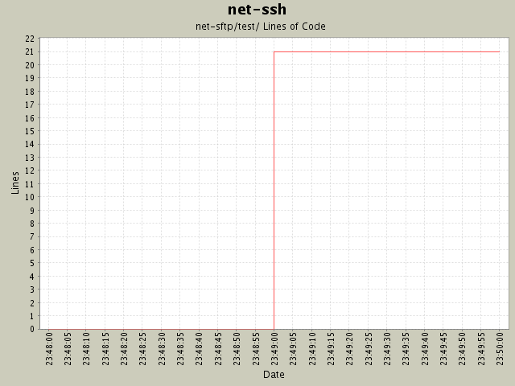

Summary Period: 2004-12-01 to 2004-12-01
[root]/net-sftp/test
 operations
(16 files, 926 lines)
operations
(16 files, 926 lines)
 protocol
(1 files, 219 lines)
protocol
(1 files, 219 lines)
 01
(3 files, 513 lines)
01
(3 files, 513 lines)
 02
(2 files, 72 lines)
02
(2 files, 72 lines)
 03
(2 files, 82 lines)
03
(2 files, 82 lines)
 04
(3 files, 317 lines)
04
(3 files, 317 lines)

Total Lines Of Code:
21 (2005-01-07 15:12)
| Author | Changes | Lines of Code | Lines per Change |
|---|---|---|---|
| minam | 1 (100.0%) | 21 (100.0%) | 21.0 |
Initial revision
21 lines of code changed in:
Generated by StatCVS 0.2.3